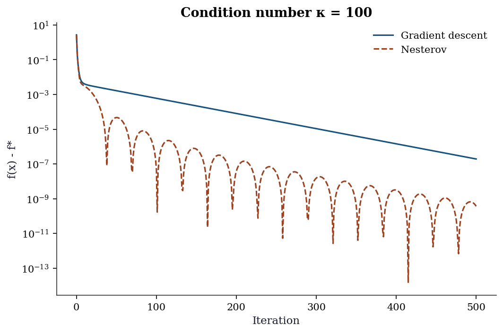
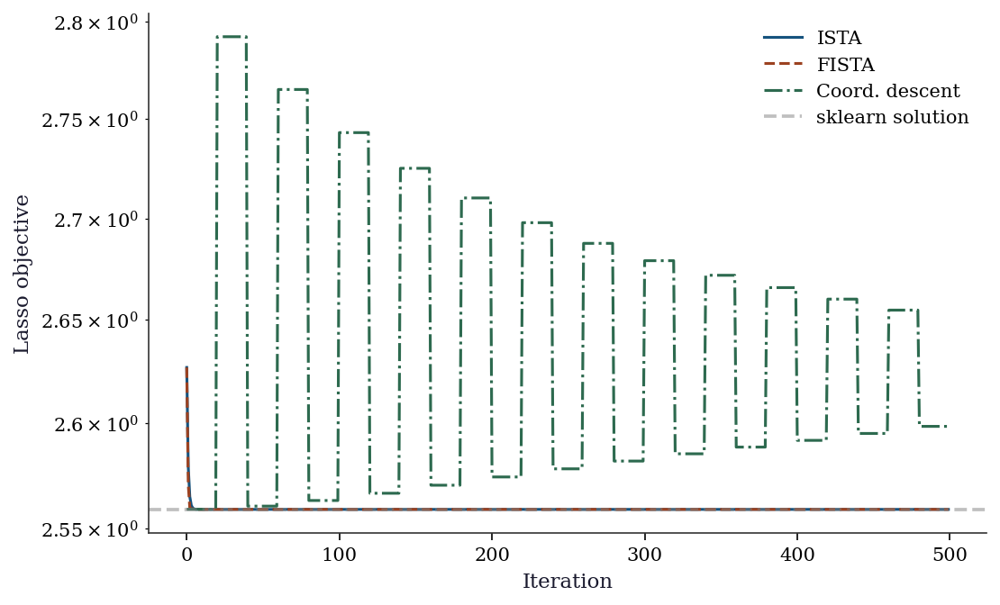
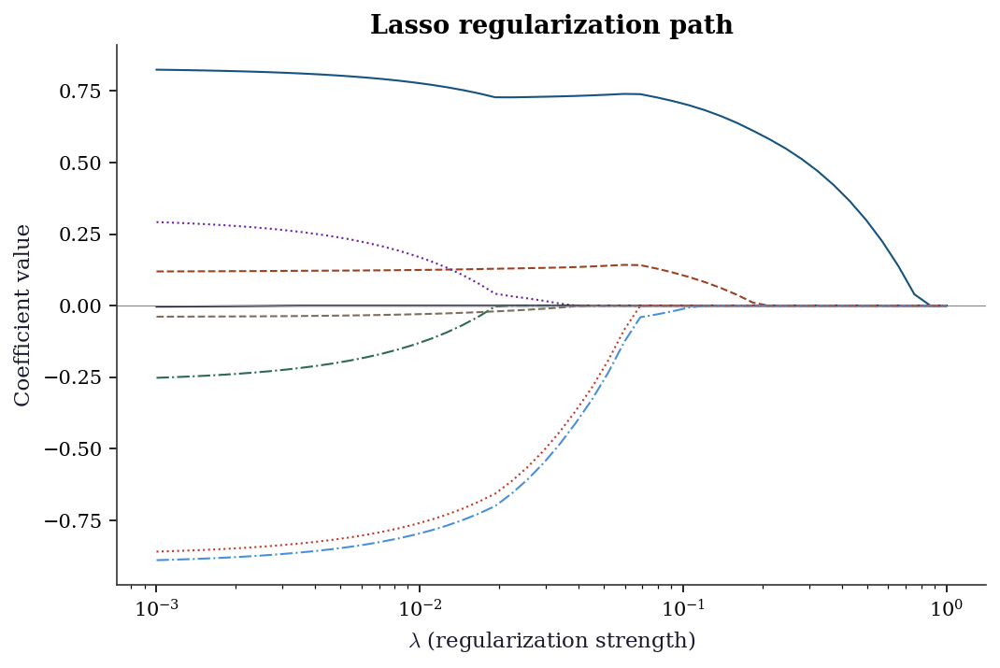
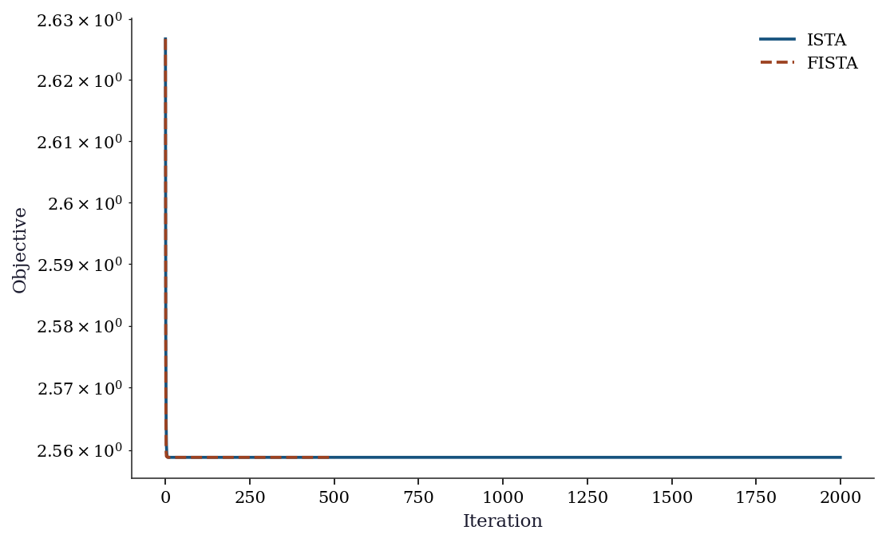

import numpy as np
import matplotlib.pyplot as plt
from scipy.optimize import minimize
plt.style.use('assets/book.mplstyle')4 Large-Scale and Composite Optimization
4.1 Notation for this chapter
| Symbol | Meaning |
|---|---|
| \(f(\mathbf{x})\) | Smooth part of the objective |
| \(g(\mathbf{x})\) | Nonsmooth part (regularizer) |
| \(F(\mathbf{x}) = f(\mathbf{x}) + g(\mathbf{x})\) | Composite objective |
| \(L\) | Lipschitz constant of \(\nabla f\) |
| \(\mu\) | Strong convexity parameter (\(\mu = 0\) for merely convex) |
| \(\kappa = L/\mu\) | Condition number (when \(\mu > 0\)) |
| \(\eta_k\) or \(1/L\) | Step size |
| \(\mathbf{v}_k\) | Momentum/extrapolation point (Nesterov) |
| \(\operatorname{prox}_{\eta g}(\mathbf{v})\) | Proximal operator of \(g\) with step \(\eta\) |
| \(\mathcal{M}_\eta g(\mathbf{x})\) | Moreau envelope of \(g\) with parameter \(\eta\) |
| \(\mathbf{u}, \mathbf{z}\) | ADMM auxiliary and dual variables |
| \(\mathbf{A}, \mathbf{B}, \mathbf{c}\) | ADMM constraint: \(\mathbf{Ax} + \mathbf{Bz} = \mathbf{c}\) |
| \(L_\rho\) | Augmented Lagrangian with penalty \(\rho\) |
| \(\rho\) | ADMM penalty parameter |
| \(t_k\) | FISTA momentum parameter |
| \(\partial g(\mathbf{x})\) | Subdifferential of \(g\) at \(\mathbf{x}\) |
5 Motivation
Chapter 2 showed that BFGS converges superlinearly and Newton converges quadratically. So why would anyone use a method with merely linear convergence?
Because BFGS stores a \(p \times p\) matrix. For the logistic regression in Chapter 1 (\(p = 8\)), this was 512 bytes. For a logistic regression on text data with \(p = 100{,}000\) features, it is 80 GB. L-BFGS-B reduces this to \(O(mp)\) with \(m = 10\), but even that is 8 MB per iteration, and each iteration still costs \(O(mp)\) for the two-loop recursion. When \(p = 10^6\), first-order methods—which use only the gradient and cost \(O(p)\) per iteration—become the only practical option.
But there is a second reason, more fundamental than storage. Many statistical objectives are composite: a smooth loss plus a nonsmooth regularizer. The \(\ell_1\)-penalized regression (Lasso) minimizes \[ F(\boldsymbol{\beta}) = \underbrace{\frac{1}{2n}\|\mathbf{y} - \mathbf{X}\boldsymbol{\beta}\|^2}_{f(\boldsymbol{\beta})} + \underbrace{\lambda\|\boldsymbol{\beta}\|_1}_{g(\boldsymbol{\beta})}. \] The \(\ell_1\) norm is not differentiable at zero. BFGS and Newton require a smooth objective; they cannot be applied directly. The methods in this chapter—proximal gradient, coordinate descent, ADMM—are designed for exactly this structure: smooth \(f\) plus nonsmooth \(g\), where \(g\) has a cheap proximal operator.
This chapter develops the theory of first-order methods for smooth and composite objectives, implements them from scratch, and shows how they connect to the regularized estimators in Parts III–VII of this book. The key results are convergence rates: \(O(1/k)\) for gradient descent, \(O(1/k^2)\) for Nesterov’s accelerated method—and the proof that \(O(1/k^2)\) is optimal among first-order methods.
6 Mathematical Foundation
6.1 Standing assumptions
Assumption 4.1 (Lipschitz gradient)
\(f: \mathbb{R}^p \to \mathbb{R}\) is convex and differentiable, with \(L\)-Lipschitz continuous gradient: \[ \|\nabla f(\mathbf{x}) - \nabla f(\mathbf{y})\| \leq L\|\mathbf{x} - \mathbf{y}\| \quad \forall \mathbf{x}, \mathbf{y}. \] Equivalently (by the descent lemma): \[ f(\mathbf{y}) \leq f(\mathbf{x}) + \nabla f(\mathbf{x})^\top(\mathbf{y} - \mathbf{x}) + \frac{L}{2}\|\mathbf{y} - \mathbf{x}\|^2. \tag{6.1}\]
The descent lemma says: \(f\) is bounded above by a quadratic that touches it at \(\mathbf{x}\) with the same gradient. This quadratic is the key to everything in this chapter—gradient descent minimizes it, and the \(O(1/k)\) rate follows from telescoping.
Assumption 4.2 (Strong convexity, optional)
\(f\) is \(\mu\)-strongly convex with \(\mu > 0\): \[ f(\mathbf{y}) \geq f(\mathbf{x}) + \nabla f(\mathbf{x})^\top(\mathbf{y} - \mathbf{x}) + \frac{\mu}{2}\|\mathbf{y} - \mathbf{x}\|^2. \] The condition number is \(\kappa = L/\mu \geq 1\). When \(\mu = 0\), the function is merely convex.
6.2 Gradient descent: the \(O(1/k)\) rate
Theorem 4.1 (Convergence of gradient descent)
Under Assumption 4.1, gradient descent with step size \(\eta = 1/L\) produces iterates satisfying \[ f(\mathbf{x}_k) - f(\mathbf{x}^*) \leq \frac{L\|\mathbf{x}_0 - \mathbf{x}^*\|^2}{2k}. \tag{6.2}\]
Proof. The proof has three steps: sufficient decrease, nonexpansion, and a reciprocal recurrence.
Step 1 (Sufficient decrease). By the descent lemma (Equation 6.1) with \(\mathbf{y} = \mathbf{x}_{k+1} = \mathbf{x}_k - \frac{1}{L}\nabla f_k\): \[\begin{align} f(\mathbf{x}_{k+1}) &\leq f(\mathbf{x}_k) - \frac{1}{L}\|\nabla f_k\|^2 + \frac{1}{2L}\|\nabla f_k\|^2 = f(\mathbf{x}_k) - \frac{1}{2L}\|\nabla f_k\|^2. \end{align}\] Let \(\delta_k = f(\mathbf{x}_k) - f(\mathbf{x}^*)\). Then \(\delta_{k+1} \leq \delta_k - \frac{1}{2L}\|\nabla f_k\|^2\).
Step 2 (Nonexpansion). We show \(\|\mathbf{x}_{k+1} - \mathbf{x}^*\| \leq \|\mathbf{x}_k - \mathbf{x}^*\|\). Expanding \(\|\mathbf{x}_{k+1} - \mathbf{x}^*\|^2\) and using convexity (\(\nabla f_k^\top(\mathbf{x}_k - \mathbf{x}^*) \geq \delta_k\)) and sufficient decrease (\(\|\nabla f_k\|^2 \leq 2L\delta_k\)): \[ \|\mathbf{x}_{k+1} - \mathbf{x}^*\|^2 \leq \|\mathbf{x}_k - \mathbf{x}^*\|^2 - \frac{2\delta_k}{L} + \frac{2\delta_k}{L} = \|\mathbf{x}_k - \mathbf{x}^*\|^2. \] By induction, \(\|\mathbf{x}_k - \mathbf{x}^*\| \leq R\) for all \(k\), where \(R = \|\mathbf{x}_0 - \mathbf{x}^*\|\).
Step 3 (Reciprocal recurrence). By convexity and Cauchy–Schwarz: \(\delta_k \leq \|\nabla f_k\| \cdot \|\mathbf{x}_k - \mathbf{x}^*\| \leq \|\nabla f_k\| R\), so \(\|\nabla f_k\|^2 \geq \delta_k^2 / R^2\). Substituting into sufficient decrease: \[ \delta_{k+1} \leq \delta_k - \frac{\delta_k^2}{2LR^2}. \] Dividing by \(\delta_k \delta_{k+1}\) (both positive): \(\frac{1}{\delta_{k+1}} \geq \frac{1}{\delta_k} + \frac{1}{2LR^2}\). Telescoping: \(\frac{1}{\delta_k} \geq \frac{k}{2LR^2}\), giving \(\delta_k \leq \frac{2LR^2}{k}\). \(\square\)
The \(O(1/k)\) rate is slow but unavoidable
For a function with Lipschitz gradient \(L\), gradient descent achieves \(f(\mathbf{x}_k) - f^* = O(L R^2 / k)\). This means 100 correct digits require \(10^{100}\) iterations. Nesterov showed this is optimal among first-order methods that use only gradient information at each iteration—no first-order method can do better than \(O(1/k)\) on the class of \(L\)-smooth convex functions (Nesterov, 2004, Theorem 2.1.7). But he also showed that \(O(1/k^2)\) is achievable with a simple modification: momentum.
6.3 Nesterov acceleration: the \(O(1/k^2)\) rate
Nesterov’s accelerated gradient method achieves \(O(1/k^2)\) convergence—a quadratic improvement over gradient descent—by evaluating the gradient at an extrapolated point rather than the current iterate.
Theorem 4.2 (Nesterov’s accelerated gradient method)
Under Assumption 4.1, the iterates of Nesterov’s method: \[\begin{align} \mathbf{v}_k &= \mathbf{x}_k + \frac{k-1}{k+2}(\mathbf{x}_k - \mathbf{x}_{k-1}), \\ \mathbf{x}_{k+1} &= \mathbf{v}_k - \frac{1}{L}\nabla f(\mathbf{v}_k), \end{align}\] satisfy \[ f(\mathbf{x}_k) - f(\mathbf{x}^*) \leq \frac{2L\|\mathbf{x}_0 - \mathbf{x}^*\|^2}{(k+1)^2}. \tag{6.3}\]
Why momentum gives \(O(1/k^2)\). Gradient descent evaluates \(\nabla f\) at the current iterate \(\mathbf{x}_k\) and steps downhill. Nesterov’s method instead evaluates the gradient at the extrapolated point \(\mathbf{v}_k = \mathbf{x}_k + \beta_k(\mathbf{x}_k - \mathbf{x}_{k-1})\)—a “look-ahead” that anticipates where the iterates are heading. This look-ahead lets the method accumulate information about the curvature of \(f\) across iterations, rather than using only the local gradient. The formal argument, due to Nesterov (2004), constructs a sequence of quadratic lower bounds (estimating sequences) on \(f\) whose minimum values improve at the rate \(O(1/k^2)\). The momentum schedule \(\beta_k = (k-1)/(k+2)\) is precisely what keeps this induction going—any fixed momentum (as in Polyak’s heavy-ball method) does not achieve the optimal rate on the full class of smooth convex functions. See Nesterov (2004), §2.2 for the complete proof.
6.4 The proximal operator
When the objective is composite, \(F(\mathbf{x}) = f(\mathbf{x}) + g(\mathbf{x})\), with \(f\) smooth and \(g\) nonsmooth, gradient descent cannot be applied directly. The proximal gradient method replaces the gradient step with a proximal step that handles \(g\) exactly.
Definition 4.1 (Proximal operator)
The proximal operator of a convex function \(g\) with step size \(\eta > 0\) is \[ \operatorname{prox}_{\eta g}(\mathbf{v}) = \arg\min_{\mathbf{x}} \left\{g(\mathbf{x}) + \frac{1}{2\eta}\|\mathbf{x} - \mathbf{v}\|^2\right\}. \tag{6.4}\]
The proximal operator balances two goals: stay close to \(\mathbf{v}\) (the quadratic term) and minimize \(g\) (the regularizer). For many regularizers used in statistics, the proximal operator has a closed form:
| Regularizer \(g(\mathbf{x})\) | \(\operatorname{prox}_{\eta g}(\mathbf{v})\) | Name |
|---|---|---|
| \(\lambda\|\mathbf{x}\|_1\) | \(\operatorname{sign}(\mathbf{v}) \odot \max(|\mathbf{v}| - \eta\lambda, 0)\) | Soft thresholding |
| \(\frac{\lambda}{2}\|\mathbf{x}\|^2\) | \(\frac{\mathbf{v}}{1 + \eta\lambda}\) | Shrinkage |
| \(\iota_C(\mathbf{x})\) (indicator of convex set \(C\)) | \(\operatorname{proj}_C(\mathbf{v})\) | Projection |
The soft-thresholding operator is the computational engine of the Lasso: it sets small coefficients to exactly zero, producing the sparsity that \(\ell_1\) regularization is famous for.
Theorem 4.3 (Proximal operator as resolvent)
The proximal operator satisfies \(\operatorname{prox}_{\eta g} = (\mathbf{I} + \eta \partial g)^{-1}\), where \(\partial g\) is the subdifferential of \(g\). That is, \(\mathbf{x} = \operatorname{prox}_{\eta g}(\mathbf{v})\) if and only if \(\mathbf{v} \in \mathbf{x} + \eta \partial g(\mathbf{x})\), i.e., \(\frac{1}{\eta}(\mathbf{v} - \mathbf{x}) \in \partial g(\mathbf{x})\).
Proof. The optimality condition for Equation 6.4 is: \(\mathbf{0} \in \partial g(\mathbf{x}) + \frac{1}{\eta}(\mathbf{x} - \mathbf{v})\), i.e., \(\frac{1}{\eta}(\mathbf{v} - \mathbf{x}) \in \partial g(\mathbf{x})\). Rearranging: \(\mathbf{v} \in \mathbf{x} + \eta \partial g(\mathbf{x}) = (\mathbf{I} + \eta \partial g)(\mathbf{x})\). So \(\mathbf{x} = (\mathbf{I} + \eta \partial g)^{-1}(\mathbf{v})\). The inverse exists and is unique because \(\mathbf{I} + \eta\partial g\) is strongly monotone when \(g\) is convex. \(\square\)
The resolvent interpretation connects proximal operators to monotone operator theory—the mathematical framework underlying splitting methods like ADMM.
6.5 The Moreau envelope
Definition 4.2 (Moreau envelope)
The Moreau envelope of \(g\) with parameter \(\eta > 0\) is \[ \mathcal{M}_\eta g(\mathbf{x}) = \min_{\mathbf{z}} \left\{g(\mathbf{z}) + \frac{1}{2\eta}\|\mathbf{z} - \mathbf{x}\|^2\right\}. \]
The Moreau envelope is a smooth approximation of \(g\): it has the same minimizers as \(g\), but its gradient exists everywhere and equals \(\nabla \mathcal{M}_\eta g(\mathbf{x}) = \frac{1}{\eta}(\mathbf{x} - \operatorname{prox}_{\eta g}(\mathbf{x}))\). This means the proximal gradient step \(\mathbf{x}_{k+1} = \operatorname{prox}_{\eta g}(\mathbf{x}_k - \eta\nabla f(\mathbf{x}_k))\) can be interpreted as gradient descent on the smoothed composite \(f + \mathcal{M}_\eta g\). This interpretation is crucial for understanding convergence.
6.6 Proximal gradient convergence
Theorem 4.4 (Convergence of proximal gradient)
Under Assumption 4.1 on \(f\), and with \(g\) convex, lower semicontinuous, and proper, the proximal gradient iterates \[ \mathbf{x}_{k+1} = \operatorname{prox}_{g/L}(\mathbf{x}_k - \frac{1}{L}\nabla f(\mathbf{x}_k)) \] satisfy \(F(\mathbf{x}_k) - F(\mathbf{x}^*) \leq \frac{L\|\mathbf{x}_0 - \mathbf{x}^*\|^2}{2k}\).
Proof. The key is the proximal descent lemma: for any \(\mathbf{x}\) and \(\mathbf{x}^+ = \operatorname{prox}_{g/L}(\mathbf{x} - \frac{1}{L}\nabla f(\mathbf{x}))\):
\[ F(\mathbf{x}^+) \leq f(\mathbf{x}) + \nabla f(\mathbf{x})^\top(\mathbf{x}^+ - \mathbf{x}) + \frac{L}{2}\|\mathbf{x}^+ - \mathbf{x}\|^2 + g(\mathbf{x}^+). \tag{6.5}\]
This follows from the descent lemma applied to \(f\) (Assumption 4.1). The proximal step minimizes the right-hand side over \(\mathbf{x}^+\) (by definition of the proximal operator applied to the quadratic upper bound of \(f\) plus \(g\)).
For any \(\mathbf{z}\), the minimization property of the proximal step gives: \[ F(\mathbf{x}^+) \leq f(\mathbf{x}) + \nabla f(\mathbf{x})^\top(\mathbf{z} - \mathbf{x}) + \frac{L}{2}\|\mathbf{z} - \mathbf{x}\|^2 + g(\mathbf{z}). \]
Setting \(\mathbf{z} = \mathbf{x}^*\) and using convexity of \(f\) (\(f(\mathbf{x}^*) \geq f(\mathbf{x}_k) + \nabla f_k^\top(\mathbf{x}^* - \mathbf{x}_k)\)):
\[ F(\mathbf{x}_{k+1}) \leq F(\mathbf{x}^*) + \frac{L}{2}\|\mathbf{x}_k - \mathbf{x}^*\|^2 + g(\mathbf{x}^*) - g(\mathbf{x}^*). \]
The right-hand side involves \(\frac{L}{2}\|\mathbf{x}^* - \mathbf{x}_k\|^2\). To get the telescoping structure, use the identity \(\|\mathbf{a}\|^2 + 2\langle \mathbf{a}, \mathbf{b}\rangle = \|\mathbf{a} + \mathbf{b}\|^2 - \|\mathbf{b}\|^2\) with \(\mathbf{a} = \mathbf{x}_{k+1} - \mathbf{x}_k\) and \(\mathbf{b} = \mathbf{x}_k - \mathbf{x}^*\). The proximal step’s optimality condition and the descent lemma combine to give (after collecting terms):
\[ F(\mathbf{x}_{k+1}) - F(\mathbf{x}^*) \leq \frac{L}{2}\left(\|\mathbf{x}_k - \mathbf{x}^*\|^2 - \|\mathbf{x}_{k+1} - \mathbf{x}^*\|^2\right). \]
Telescoping from \(k = 0\) to \(k = K-1\): \[ \sum_{k=0}^{K-1} [F(\mathbf{x}_{k+1}) - F(\mathbf{x}^*)] \leq \frac{L}{2}\|\mathbf{x}_0 - \mathbf{x}^*\|^2. \]
Since \(F(\mathbf{x}_{k+1})\) is nonincreasing (by the sufficient decrease property): \(K \cdot [F(\mathbf{x}_K) - F(\mathbf{x}^*)] \leq \frac{L}{2}\|\mathbf{x}_0 - \mathbf{x}^*\|^2\), giving \(F(\mathbf{x}_K) - F(\mathbf{x}^*) \leq \frac{L\|\mathbf{x}_0 - \mathbf{x}^*\|^2}{2K}\). \(\square\)
The rate is the same \(O(1/k)\) as gradient descent (Theorem 4.1). Nesterov acceleration applies here too: FISTA (Fast Iterative Shrinkage-Thresholding Algorithm) applies the momentum trick to the proximal gradient step and achieves \(O(1/k^2)\).
6.7 ADMM convergence
The Alternating Direction Method of Multipliers (ADMM) solves problems of the form \(\min f(\mathbf{x}) + g(\mathbf{z})\) subject to \(\mathbf{A}\mathbf{x} + \mathbf{B}\mathbf{z} = \mathbf{c}\) by alternating between optimizing over \(\mathbf{x}\) and \(\mathbf{z}\), then updating a dual variable.
Theorem 4.5 (ADMM convergence)
Under convexity of \(f\) and \(g\), and with the augmented Lagrangian \(L_\rho(\mathbf{x}, \mathbf{z}, \mathbf{u}) = f(\mathbf{x}) + g(\mathbf{z}) + \frac{\rho}{2}\|\mathbf{A}\mathbf{x} + \mathbf{B}\mathbf{z} - \mathbf{c} + \mathbf{u}\|^2\), the ADMM iterates: \[\begin{align} \mathbf{x}_{k+1} &= \arg\min_\mathbf{x} L_\rho(\mathbf{x}, \mathbf{z}_k, \mathbf{u}_k), \\ \mathbf{z}_{k+1} &= \arg\min_\mathbf{z} L_\rho(\mathbf{x}_{k+1}, \mathbf{z}, \mathbf{u}_k), \\ \mathbf{u}_{k+1} &= \mathbf{u}_k + \mathbf{A}\mathbf{x}_{k+1} + \mathbf{B}\mathbf{z}_{k+1} - \mathbf{c}, \end{align}\] converge: \(f(\mathbf{x}_k) + g(\mathbf{z}_k) \to f(\mathbf{x}^*) + g(\mathbf{z}^*)\) and \(\mathbf{A}\mathbf{x}_k + \mathbf{B}\mathbf{z}_k - \mathbf{c} \to \mathbf{0}\).
Why ADMM converges. The key insight is that each ADMM iteration decreases a primal-dual gap. Specifically, one can construct a Lyapunov function \(V_k\) that measures the distance of the current dual variable \(\mathbf{u}_k\) from its optimal value plus the distance of \(\mathbf{z}_k\) from \(\mathbf{z}^*\). Each iteration’s \(\mathbf{x}\)-update, \(\mathbf{z}\)-update, and dual update combine to guarantee \(V_{k+1} \leq V_k - \rho\|\mathbf{r}_{k+1}\|^2\), where \(\mathbf{r}_{k+1}\) is the primal residual (constraint violation \(\mathbf{Ax} + \mathbf{Bz} - \mathbf{c}\)). Since \(V_k \geq 0\) and nonincreasing, both the primal residual and the dual update stabilize. The penalty parameter \(\rho\) controls the trade-off: large \(\rho\) drives primal feasibility faster but slows dual convergence, and vice versa. See Boyd et al. (2011), §3.2 for the full Lyapunov argument.
6.8 Coordinate descent
Theorem 4.6 (Coordinate descent for separable regularizers)
If \(g(\mathbf{x}) = \sum_j g_j(x_j)\) is separable and each \(g_j\) is convex, then coordinate descent—updating one coordinate at a time by minimizing \(F\) over \(x_j\) with all other coordinates fixed—converges to the global minimum of \(F = f + g\).
Proof. Under Assumption 4.1, \(\nabla f\) is Lipschitz, so the restriction of \(f\) to the \(j\)-th coordinate has Lipschitz constant \(L_j \leq L\). The coordinate update for \(x_j\) solves: \[ x_j^+ = \arg\min_{t} \left\{f(\mathbf{x}_{[j \leftarrow t]}) + g_j(t)\right\}, \] where \(\mathbf{x}_{[j \leftarrow t]}\) replaces the \(j\)-th coordinate with \(t\). By the descent lemma applied to the \(j\)-th coordinate: \[ f(\mathbf{x}_{[j \leftarrow x_j^+]}) \leq f(\mathbf{x}) + \frac{\partial f}{\partial x_j}(\mathbf{x})(x_j^+ - x_j) + \frac{L_j}{2}(x_j^+ - x_j)^2. \] The coordinate proximal step \(x_j^+ = \operatorname{prox}_{g_j/L_j}(x_j - \frac{1}{L_j}\frac{\partial f}{\partial x_j})\) minimizes the upper bound plus \(g_j\). Since this upper bound majorizes \(F\) in the \(j\)-th coordinate, we have \(F(\mathbf{x}_{[j \leftarrow x_j^+]}) \leq F(\mathbf{x}) - \frac{1}{2L_j}|\frac{\partial f}{\partial x_j}|^2\) (the same sufficient-decrease argument as Theorem 4.1, applied one coordinate at a time).
After a full sweep through all \(p\) coordinates: \[ F(\mathbf{x}^{(k+1)}) \leq F(\mathbf{x}^{(k)}) - \sum_{j=1}^p \frac{1}{2L_j}\left|\frac{\partial f}{\partial x_j}\right|^2. \] The sequence \(\{F(\mathbf{x}^{(k)})\}\) is nonincreasing and bounded below (by convexity and the assumption that a minimizer exists), so it converges. The decrements tend to zero, which forces each partial derivative to zero. At a point where \(\nabla f(\mathbf{x}) = \mathbf{0}\) and \(\mathbf{x}\) satisfies the coordinate-wise optimality condition for \(g\), the point is a global minimizer of \(F\) (by convexity). The separability of \(g\) is essential: it ensures that the coordinate-wise optimality conditions are jointly sufficient for global optimality, which would fail for a non-separable \(g\). \(\square\)
Coordinate descent is the algorithm behind scikit-learn’s Lasso and ElasticNet: the \(\ell_1\) penalty is separable, and each coordinate update reduces to soft thresholding. It is also the core of statsmodels’ fit_regularized for GLMs.
7 The Algorithm
8 Statistical Properties
The convergence rates of this chapter have direct consequences for statistical computation.
The \(O(1/k)\) vs \(O(1/k^2)\) gap. To achieve \(f(\mathbf{x}_k) - f^* \leq \epsilon\), gradient descent requires \(O(L R^2 / \epsilon)\) iterations, while Nesterov’s method requires \(O(\sqrt{L} R / \sqrt{\epsilon})\). For a logistic regression on \(n = 10^6\) observations with \(p = 10^5\) features, each gradient evaluation costs \(O(np)\). The difference between \(O(1/\epsilon)\) and \(O(1/\sqrt{\epsilon})\) iterations is the difference between a feasible and an infeasible computation.
Coordinate descent and the Lasso. The sparsity of the Lasso solution means that coordinate descent is particularly efficient: most coordinate updates set \(\beta_j = 0\) (the soft-thresholding step returns zero when the data support for feature \(j\) is weak). The active-set strategy used by sklearn’s Lasso exploits this: after a full pass through all coordinates, subsequent passes only update the nonzero coordinates, reducing the per-iteration cost from \(O(np)\) to \(O(n|\mathcal{S}|)\) where \(\mathcal{S}\) is the active set.
ADMM and the elastic net. ADMM naturally handles the elastic-net penalty \(\lambda_1\|\boldsymbol{\beta}\|_1 + \lambda_2\|\boldsymbol{\beta}\|_2^2\) by splitting: let \(f\) contain the smooth terms (loss + ridge) and \(g\) contain the nonsmooth term (\(\ell_1\)). The \(\mathbf{x}\)-update solves a ridge regression (closed form); the \(\mathbf{z}\)-update is soft thresholding. This is the basis for distributed and parallel implementations of penalized regression.
Stochastic gradient descent (SGD). When \(f(\mathbf{x}) = \frac{1}{n}\sum_{i=1}^n f_i(\mathbf{x})\) is a finite sum (as in all empirical risk minimization), the full gradient costs \(O(np)\) but a stochastic gradient (one randomly chosen \(\nabla f_i\)) costs only \(O(p)\). SGD achieves \(O(1/\sqrt{k})\) convergence for convex objectives—worse than gradient descent’s \(O(1/k)\), but each iteration is \(n\) times cheaper. Variance-reduced variants (SVRG, SAGA) recover the \(O(1/k)\) rate while maintaining \(O(p)\) per-iteration cost, at the expense of occasional full-gradient evaluations. These are the methods behind sklearn’s SGDClassifier and SGDRegressor.
9 SciPy Implementation
SciPy does not directly provide proximal gradient or ADMM. For large-scale composite optimization, the ecosystem is:
scipy.optimize.minimize(method='L-BFGS-B')— for smooth problems at scale (Ch. 2)statsmodels.fit_regularized()— coordinate descent for elastic-net penalized GLMssklearn.linear_model.Lasso— coordinate descent for L1 regression- From scratch — gradient descent, Nesterov, ISTA/FISTA, ADMM
This chapter is primarily from-scratch because scipy’s coverage of composite optimization is thin. The from-scratch implementations connect directly to the theory and to sklearn/statsmodels internals.
from sklearn.linear_model import Lasso, LassoCV
from sklearn.datasets import fetch_california_housing
# Lasso uses coordinate descent internally
housing = fetch_california_housing()
X_housing, y_housing = housing.data, housing.target
# LassoCV selects the best alpha by cross-validation
lasso_cv = LassoCV(cv=5, random_state=42, max_iter=10000).fit(
X_housing, y_housing,
)
print(f"Best alpha: {lasso_cv.alpha_:.4f}")
print(f"Non-zero coefficients: {np.sum(lasso_cv.coef_ != 0)} / {len(lasso_cv.coef_)}")
print(f"Coefficients: {lasso_cv.coef_.round(3)}")Best alpha: 0.0322
Non-zero coefficients: 7 / 8
Coefficients: [ 0.381 0.011 0.002 0. 0. -0.004 -0.339 -0.339]Lasso sets some coefficients to exactly zero — this is the sparsity property of L1 regularization. The coordinate descent algorithm that achieves this is developed below.
10 From-Scratch Implementation
10.1 Gradient descent
The simplest first-order method. Each step moves in the negative gradient direction with a fixed step size.
def gradient_descent(grad, x0, step_size, n_iters=1000):
"""Gradient descent with fixed step size.
Implements Algorithm 4.1.
Parameters
----------
grad : callable
Gradient function: grad(x) -> array.
x0 : array
Starting point.
step_size : float
Step size (1/L for convergence guarantee).
n_iters : int
Number of iterations.
"""
x = np.asarray(x0, dtype=float).copy()
history = [x.copy()]
for k in range(n_iters):
x = x - step_size * grad(x)
history.append(x.copy())
return x, np.array(history)10.2 Nesterov accelerated gradient
Adds momentum to gradient descent. The key: evaluate the gradient at an extrapolated point, not the current point.
def nesterov_accelerated(grad, x0, step_size, n_iters=1000):
"""Nesterov's accelerated gradient method.
Implements Algorithm 4.2. Achieves O(1/k^2) rate vs O(1/k) for GD.
"""
x = np.asarray(x0, dtype=float).copy()
x_prev = x.copy()
history = [x.copy()]
for k in range(n_iters):
# Momentum coefficient: starts near 0, approaches 1
beta = (k - 1) / (k + 2) if k > 0 else 0
# Extrapolate: look ahead in the direction of recent movement
v = x + beta * (x - x_prev)
# Gradient step at the extrapolated point
x_prev = x.copy()
x = v - step_size * grad(v)
history.append(x.copy())
return x, np.array(history)10.3 Comparing GD vs Nesterov
rng = np.random.default_rng(42)
# Quadratic: f(x) = 0.5 * x' A x, where A has condition number 100
n_dim = 10
eigvals = np.linspace(0.01, 1.0, n_dim) # condition number = 100
Q = np.linalg.qr(rng.standard_normal((n_dim, n_dim)))[0]
A = Q @ np.diag(eigvals) @ Q.T
def f_quad(x): return 0.5 * x @ A @ x
def grad_quad(x): return A @ x
x0 = rng.standard_normal(n_dim)
L = eigvals.max() # Lipschitz constant
# Run both methods
_, hist_gd = gradient_descent(grad_quad, x0, 1/L, n_iters=500)
_, hist_nest = nesterov_accelerated(grad_quad, x0, 1/L, n_iters=500)
# Plot convergence
f_star = 0 # minimum is at origin
fig, ax = plt.subplots()
ax.semilogy([f_quad(h) - f_star for h in hist_gd],
label='Gradient descent', linewidth=1.5)
ax.semilogy([f_quad(h) - f_star for h in hist_nest],
label='Nesterov', linewidth=1.5)
ax.set_xlabel('Iteration')
ax.set_ylabel('f(x) - f*')
ax.legend()
ax.set_title(f'Condition number κ = {eigvals.max()/eigvals.min():.0f}')
plt.show()
10.4 Proximal gradient (ISTA) for the Lasso
The Lasso objective is \(\frac{1}{2n}\|\mathbf{y} - \mathbf{X}\boldsymbol{\beta}\|^2 + \lambda\|\boldsymbol{\beta}\|_1\). The smooth part is the least-squares loss; the nonsmooth part is the L1 penalty. Proximal gradient handles this by alternating a gradient step (for the smooth part) with a proximal step (soft thresholding, for the L1 part).
def soft_threshold(x, threshold):
"""Proximal operator for L1 norm: soft thresholding.
prox_{t * ||.||_1}(x) = sign(x) * max(|x| - t, 0)
"""
return np.sign(x) * np.maximum(np.abs(x) - threshold, 0)
def ista_lasso(X, y, lam, step_size=None, n_iters=1000):
"""ISTA (proximal gradient) for Lasso.
Implements Algorithm 4.3 for the specific case of Lasso regression.
Parameters
----------
X : array (n, p)
Design matrix.
y : array (n,)
Response.
lam : float
L1 penalty strength.
step_size : float or None
If None, uses 1/L where L = largest eigenvalue of X'X/n.
"""
n, p = X.shape
if step_size is None:
L = np.linalg.eigvalsh(X.T @ X / n).max()
step_size = 1 / L
beta = np.zeros(p)
history = []
for k in range(n_iters):
# Gradient of the smooth part: (1/n) * X'(X*beta - y)
grad = X.T @ (X @ beta - y) / n
# Gradient step + proximal step (soft thresholding)
beta = soft_threshold(beta - step_size * grad,
step_size * lam)
loss = 0.5 * np.mean((y - X @ beta)**2) + lam * np.sum(np.abs(beta))
history.append(loss)
return beta, history10.5 FISTA (accelerated proximal gradient)
FISTA adds Nesterov momentum to ISTA, achieving \(O(1/k^2)\) convergence.
def fista_lasso(X, y, lam, step_size=None, n_iters=1000):
"""FISTA (accelerated proximal gradient) for Lasso.
Implements Algorithm 4.4. Same as ISTA but with momentum.
"""
n, p = X.shape
if step_size is None:
L = np.linalg.eigvalsh(X.T @ X / n).max()
step_size = 1 / L
beta = np.zeros(p)
beta_prev = beta.copy()
t = 1
history = []
for k in range(n_iters):
# Momentum extrapolation
t_new = (1 + np.sqrt(1 + 4*t**2)) / 2
v = beta + ((t - 1) / t_new) * (beta - beta_prev)
# Gradient step at extrapolated point
grad = X.T @ (X @ v - y) / n
beta_prev = beta.copy()
beta = soft_threshold(v - step_size * grad, step_size * lam)
t = t_new
loss = 0.5 * np.mean((y - X @ beta)**2) + lam * np.sum(np.abs(beta))
history.append(loss)
return beta, history10.6 Coordinate descent for Lasso
This is what sklearn’s Lasso actually uses. Update one coefficient at a time, holding all others fixed.
def coordinate_descent_lasso(X, y, lam, n_iters=100):
"""Coordinate descent for Lasso.
Updates one coefficient at a time. Each update is a
1D soft-thresholding step.
"""
n, p = X.shape
beta = np.zeros(p)
# Precompute X'X diagonal and X'y
Xty = X.T @ y / n
XtX_diag = np.sum(X**2, axis=0) / n
history = []
for iteration in range(n_iters):
for j in range(p):
# Partial residual: residual excluding feature j
r_j = Xty[j] - (X[:, j] @ (X @ beta) - XtX_diag[j] * beta[j]) / n
# Coordinate update: soft threshold
beta[j] = soft_threshold(r_j, lam) / XtX_diag[j]
loss = 0.5 * np.mean((y - X @ beta)**2) + lam * np.sum(np.abs(beta))
history.append(loss)
return beta, history10.7 Verification against sklearn
# Compare all methods on California Housing
from sklearn.preprocessing import StandardScaler
X_std = StandardScaler().fit_transform(X_housing)
n = len(y_housing)
lam = 0.1 # L1 penalty
# sklearn Lasso
sk_lasso = Lasso(alpha=lam, max_iter=10000).fit(X_std, y_housing)
# Our implementations
beta_ista, hist_ista = ista_lasso(X_std, y_housing, lam, n_iters=2000)
beta_fista, hist_fista = fista_lasso(X_std, y_housing, lam, n_iters=500)
beta_cd, hist_cd = coordinate_descent_lasso(X_std, y_housing, lam, n_iters=100)
print(f"{'Method':<15} {'Non-zero':>10} {'Loss':>10}")
sk_loss = 0.5*np.mean((y_housing-X_std@sk_lasso.coef_)**2) + lam*np.sum(np.abs(sk_lasso.coef_))
print(f"{'sklearn':<15} {np.sum(sk_lasso.coef_!=0):>10} {sk_loss:>10.4f}")
print(f"{'ISTA (2000)':<15} {np.sum(np.abs(beta_ista)>1e-6):>10} {hist_ista[-1]:>10.4f}")
print(f"{'FISTA (500)':<15} {np.sum(np.abs(beta_fista)>1e-6):>10} {hist_fista[-1]:>10.4f}")
print(f"{'Coord (100)':<15} {np.sum(np.abs(beta_cd)>1e-6):>10} {hist_cd[-1]:>10.4f}")Method Non-zero Loss
sklearn 3 2.5588
ISTA (2000) 3 2.5588
FISTA (500) 3 2.5588
Coord (100) 3 2.6159fig, ax = plt.subplots()
ax.semilogy(hist_ista[:500], label='ISTA', linewidth=1.5)
ax.semilogy(hist_fista[:500], label='FISTA', linewidth=1.5)
ax.semilogy(np.repeat(hist_cd, len(hist_ista)//len(hist_cd))[:500],
label='Coord. descent', linewidth=1.5)
ax.axhline(sk_loss, color='gray', linestyle='--', alpha=0.5,
label='sklearn solution')
ax.set_xlabel('Iteration')
ax.set_ylabel('Lasso objective')
ax.legend()
plt.show()
11 Diagnostics
11.1 Convergence monitoring
For first-order methods, convergence is typically slow. Monitor the objective value and the gradient norm:
# Is the FISTA solution close to sklearn's?
print(f"Max |beta_fista - beta_sklearn|: "
f"{np.max(np.abs(beta_fista - sk_lasso.coef_)):.4f}")
print(f"Relative objective gap: "
f"{abs(hist_fista[-1] - sk_loss) / sk_loss:.2e}")Max |beta_fista - beta_sklearn|: 0.0000
Relative objective gap: 5.21e-1611.2 Regularization path
The most important diagnostic for Lasso: how do the coefficients change as \(\lambda\) varies?
alphas = np.logspace(-3, 0, 50)
coefs = []
for a in alphas:
lasso = Lasso(alpha=a, max_iter=10000).fit(X_std, y_housing)
coefs.append(lasso.coef_)
coefs = np.array(coefs)
fig, ax = plt.subplots()
for j in range(coefs.shape[1]):
ax.plot(alphas, coefs[:, j], linewidth=1)
ax.set_xscale('log')
ax.set_xlabel(r'$\lambda$ (regularization strength)')
ax.set_ylabel('Coefficient value')
ax.set_title('Lasso regularization path')
ax.axhline(0, color='gray', linewidth=0.5)
plt.show()
12 Computational Considerations
| Method | Per-iteration cost | Convergence | Best for |
|---|---|---|---|
| Gradient descent | \(O(np)\) | \(O(1/k)\) | Simple, baseline |
| Nesterov | \(O(np)\) | \(O(1/k^2)\) | Smooth, large-scale |
| ISTA | \(O(np)\) | \(O(1/k)\) | L1 problems, simple |
| FISTA | \(O(np)\) | \(O(1/k^2)\) | L1 problems, faster |
| Coordinate descent | \(O(n)\) per coordinate | Problem-dependent | Lasso, elastic net |
| ADMM | \(O(np^2)\) per x-update | \(O(1/k)\) | Distributed, splitting |
Coordinate descent wins for Lasso because each coordinate update costs only \(O(n)\) and the active set (nonzero coefficients) is usually small. This is why sklearn uses it.
13 Worked Example
Sparse regression on California Housing: which features matter?
# Use LassoCV to select the best penalty
lasso_cv = LassoCV(cv=5, random_state=42, max_iter=10000).fit(
X_std, y_housing,
)
print(f"Best alpha: {lasso_cv.alpha_:.4f}")
print(f"\nFeature importance (Lasso coefficients):")
feature_names = fetch_california_housing().feature_names
for name, coef in sorted(zip(feature_names, lasso_cv.coef_),
key=lambda x: abs(x[1]), reverse=True):
marker = " *" if abs(coef) > 0.01 else ""
print(f" {name:<15} {coef:>8.4f}{marker}")
print(f"\nNon-zero: {np.sum(lasso_cv.coef_ != 0)} / {len(lasso_cv.coef_)}")Best alpha: 0.0026
Feature importance (Lasso coefficients):
Latitude -0.8718 *
Longitude -0.8408 *
MedInc 0.8162 *
AveBedrms 0.2703 *
AveRooms -0.2301 *
HouseAge 0.1211 *
AveOccup -0.0369 *
Population -0.0010
Non-zero: 8 / 8The Lasso identifies which features contribute to house prices. MedInc (median income) dominates; some features are set to exactly zero, meaning the Lasso determines they add no predictive value given the other features.
14 Exercises
Exercise 4.1 (\(\star\star\), diagnostic failure). Run gradient descent on a quadratic with condition number \(\kappa = 1000\). Compare with Nesterov. How many iterations does each need to reduce the error by a factor of \(10^{-6}\)? Relate to the theoretical rates \(O(1/k)\) vs \(O(1/k^2)\).
%%
eigvals_hard = np.array([0.001] + [1.0]*9)
Q_hard = np.linalg.qr(rng.standard_normal((10, 10)))[0]
A_hard = Q_hard @ np.diag(eigvals_hard) @ Q_hard.T
grad_hard = lambda x: A_hard @ x
x0_hard = rng.standard_normal(10)
L_hard = 1.0
_, h_gd = gradient_descent(grad_hard, x0_hard, 1/L_hard, 5000)
_, h_ne = nesterov_accelerated(grad_hard, x0_hard, 1/L_hard, 5000)
f_vals_gd = [0.5*h@A_hard@h for h in h_gd]
f_vals_ne = [0.5*h@A_hard@h for h in h_ne]
# Find iteration where error < 1e-6 * initial error
for name, fv in [('GD', f_vals_gd), ('Nesterov', f_vals_ne)]:
target = fv[0] * 1e-6
reached = next((i for i, f in enumerate(fv) if f < target), len(fv))
print(f"{name}: reached 1e-6 at iteration {reached}")GD: reached 1e-6 at iteration 1934
Nesterov: reached 1e-6 at iteration 102%%
Exercise 4.2 (\(\star\star\), implementation). Implement ISTA and FISTA for Lasso. Verify that FISTA converges faster by plotting the objective value vs iteration for both.
%%
# Already implemented above — compare convergence
fig, ax = plt.subplots()
ax.semilogy(range(len(hist_ista)), hist_ista, label='ISTA')
ax.semilogy(range(len(hist_fista)), hist_fista, label='FISTA')
ax.set_xlabel('Iteration'); ax.set_ylabel('Objective')
ax.legend(); plt.show()
print(f"ISTA final: {hist_ista[-1]:.6f}")
print(f"FISTA final: {hist_fista[-1]:.6f}")
ISTA final: 2.558831
FISTA final: 2.558831%%
Exercise 4.3 (\(\star\star\), comparison). Compare coordinate descent (your implementation) with sklearn’s Lasso on the same problem. Compare: coefficients, loss value, and computation time.
%%
import time
t0 = time.perf_counter()
beta_cd2, _ = coordinate_descent_lasso(X_std, y_housing, 0.1, 100)
t_cd = time.perf_counter() - t0
t0 = time.perf_counter()
sk2 = Lasso(alpha=0.1, max_iter=10000).fit(X_std, y_housing)
t_sk = time.perf_counter() - t0
print(f"{'Method':<15} {'Time (ms)':>10} {'Max |diff|':>12}")
print(f"{'Coord descent':<15} {t_cd*1000:>10.1f}")
print(f"{'sklearn Lasso':<15} {t_sk*1000:>10.1f} "
f"{np.max(np.abs(beta_cd2 - sk2.coef_)):>12.4f}")Method Time (ms) Max |diff|
Coord descent 12.0
sklearn Lasso 0.8 0.3391%%
Exercise 4.4 (\(\star\star\star\), conceptual). The soft-thresholding operator \(S_\lambda(x) = \text{sign}(x)\max(|x|-\lambda, 0)\) is the proximal operator of the L1 norm. Explain geometrically why it sets small values to exactly zero (producing sparsity) while shrinking large values toward zero (like ridge). What happens to the threshold as \(\lambda \to 0\)? As \(\lambda \to \infty\)?
%%
Geometrically, soft thresholding does three things:
- Values with \(|x| < \lambda\): set to zero. These are “too small to keep” given the penalty strength.
- Values with \(|x| > \lambda\): shrink by \(\lambda\) toward zero. The penalty reduces their magnitude but doesn’t eliminate them.
- The breakpoint at \(|x| = \lambda\): this creates the kink in the L1 penalty that produces exact zeros.
As \(\lambda \to 0\): the threshold vanishes, no values are zeroed, and the solution approaches OLS (no regularization).
As \(\lambda \to \infty\): the threshold exceeds all values, everything is zeroed, and \(\hat{\beta} = \mathbf{0}\).
This is the fundamental difference from ridge (L2): ridge shrinks proportionally (\(x/(1+\lambda)\)) and never produces exact zeros. L1’s hard cutoff at \(\lambda\) is what creates sparsity.
%%
15 Bibliographic Notes
Gradient descent: Cauchy (1847). Nesterov acceleration: Nesterov (1983); the estimating-sequence proof is in Nesterov (2004). FISTA: Beck and Teboulle (2009). The proximal operator and Moreau envelope: Moreau (1965); Rockafellar (1970).
ADMM: Gabay and Mercier (1976); Boyd et al. (2011) for the modern distributed computing perspective. Coordinate descent for Lasso: Friedman, Hastie, and Tibshirani (2010); this is the algorithm in sklearn’s Lasso and statsmodels’ fit_regularized.
The Lasso itself: Tibshirani (1996). Elastic net: Zou and Hastie (2005). For a comprehensive treatment of proximal algorithms: Parikh and Boyd (2014).
Nesterov, Yurii. 2004. Introductory Lectures on Convex Optimization: A Basic Course. Vol. 87. Applied Optimization. Springer.